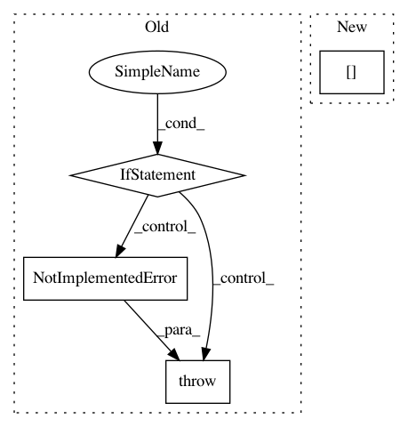

43656e4ec4052c705ac28b675bd151cba0c344a9,coremltools/converters/nnssa/coreml/ssa_converter.py,SSAConverter,_convert_batch_to_space_nd,#SSAConverter#Any#,2342
Before Change
if block_shape[0] != block_shape[1]:
raise NotImplementedError("non-equal block shape is not yet supported")
crops = input_nodes[2].value.val
if any(crops.flatten()):
raise NotImplementedError("crops are not yet supported")
builder = self._get_builder()
layer = builder.add_transpose(
name=node.name + "_transpose1",
After Change
if needs_cropping:
left, right = crops[1][0], crops[1][1]
top, bottom = crops[0][0], crops[0][1]
layer = builder.add_crop(
name=node.name + "_cropping",
left=left,
In pattern: SUPERPATTERN
Frequency: 3
Non-data size: 4
Instances
Project Name: apple/coremltools
Commit Name: 43656e4ec4052c705ac28b675bd151cba0c344a9
Time: 2019-10-04
Author: yuduo@apple.com
File Name: coremltools/converters/nnssa/coreml/ssa_converter.py
Class Name: SSAConverter
Method Name: _convert_batch_to_space_nd
Project Name: apple/coremltools
Commit Name: d8f1240c733c32c117b89fc14a6653f93b84f551
Time: 2019-12-19
Author: yuduo@apple.com
File Name: coremltools/converters/nnssa/coreml/ssa_converter.py
Class Name: SSAConverter
Method Name: _convert_conv2d
Project Name: apple/coremltools
Commit Name: 3e530f0fb84ba99e7cb6e84cc3547f1e1e5f01eb
Time: 2019-09-27
Author: bsonawane@apple.com
File Name: coremltools/converters/nnssa/coreml/ssa_converter.py
Class Name: SSAConverter
Method Name: convert